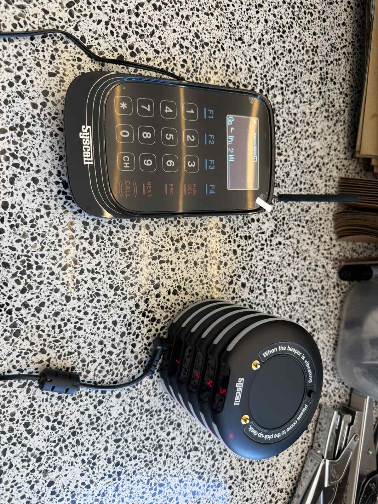
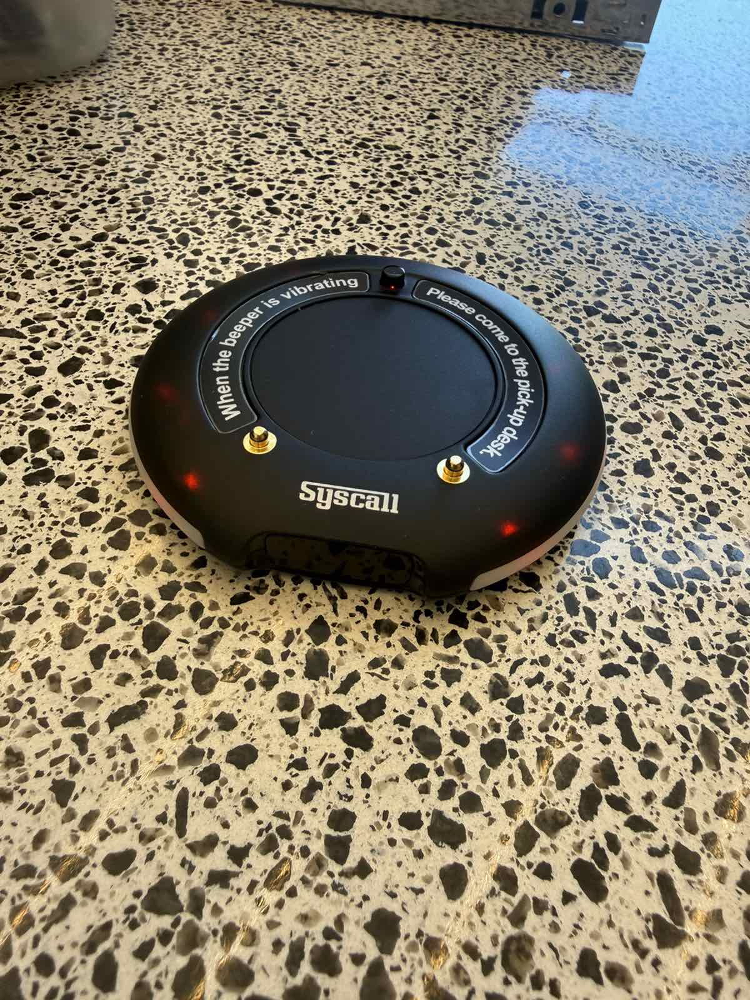

New Take Away Orders Process
Operation with Buzzer System (Syscall)
A step-by-step guide for proper service, counter decluttering, and maintaining our strictly Take Away character.

A step-by-step guide for proper service, counter decluttering, and maintaining our strictly Take Away character.

